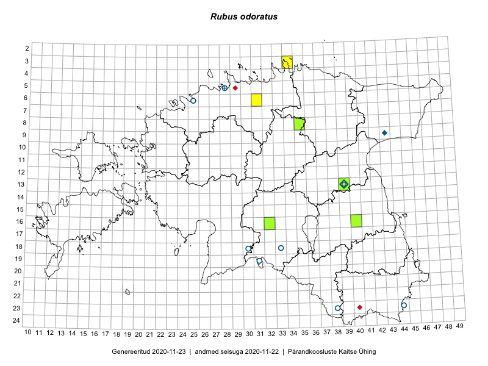

Rubus odoratus
Uuendatud: 2016-12-01
Kaardile koondatud taksonid: Rubus odoratus L.

Kaart põhineb 11 kirjel, neist vaatlusi 7 ja eksemplare 4.
Viited andmebaasikirjetele
- Rein Kalamees, Kersti Püssa: 2015-06-01: 06-31: GPS punkt
- Rein Kalamees, Kersti Püssa: 2015-06-02: 03-34: GPS punkt
- Eeva-Maria Jeletsky, Tarmo Niitla: 2015-05-03: 13-39: ala
- Thea Kull: 2015-08-03: 13-39: GPS punkt
- Thea Kull: 2015-08-03: 13-39: GPS punkt
- Ulvi Selgis: 2015-10-04: 13-39: ala
- Ulvi Selgis: 2016-08-27: 13-39: ala
- Jana-Maria Habicht: 2015-07-15: 08-35: GPS punkt
- Jana-Maria Habicht: 2015-07-15: 08-35: GPS punkt
- Jana-Maria Habicht: 2015-07-15: 08-35: GPS punkt
- Jana-Maria Habicht: 2015-07-15: 08-35: GPS punkt